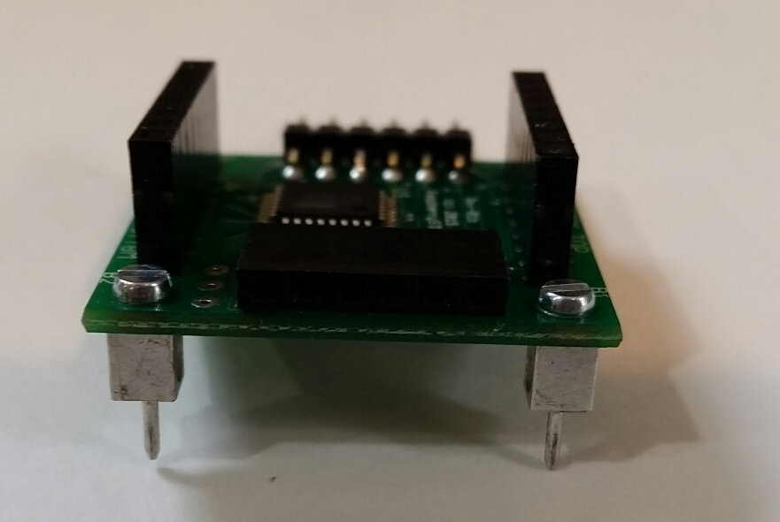

In this project, we're going to introduce a new component that can be used for a variety of purposes, including building games. It's called an LED Matrix, and like the name implies, it is basically a small device that contains lots of little LEDs (64 of them, to be exact). This is what an LED Matrix looks like (though yours won't have the smiley face just yet and the writing you see on the image below is actually on the circuit board, not the display):

Included with the RaspberrySTEM CREATOR Kit is a bag labeled, LED Matrix RaspberrySTEM Cell. This bag contains all the parts that you'll need to build and program the LED Matrix. In that bag you should find the following:
LED Matrix: This actually consists of two parts that we've assembled for you -- the green circuit board on the bottom and the LED display on the top. You can pull the display from the circuit board, but do so carefully so that none of the pins bend or break.
LED Matrix Cable: This cable consists of five wires, with connectors on each end. This is the cable that will be used to connect the LED Matrix to the breadboard.
Mounting Posts: These two small posts and screws will need to be attached to the LED Matrix to allow it to attach to the breadboard. We've also included a guitar pick that can be used as a mini-screwdriver when attaching the mounting posts.
The LED Matrix comes with two small mounting posts and screws that are used to attach the LED Matrix to the breadboard. The mounting posts should be installed prior to using the LED Matrix. To install the mounting posts, follow these steps:
The LED Matrix consists of two parts, connected together by 16 pins (8 on each side). To install the mounting posts, you will need to pull the top part (the LED display) from the bottom part (the circuit board). This is done by gripping the edges of the LED display gently in one hand, gripping the edges of the circuit board gently in the other hand and carefully separating the display from the board. Try to apply equal pressure all around the display to avoid bending or breaking any pins.
Once the display is separated from the circuit board, set the display aside.
On the circuit board corners are four holes, two labeled "A" and two labeled "B". You can attach the mounting posts either in the "A" holes or the "B" holes, but you will want to ensure that both mounting posts are attached to holes with the same letter (either both in "A" or both in "B"). Attach the mounting posts, as shown below:
Use the triangular plastic piece (a guitar pick) to tighten the mounting post screws.
Once the mounting posts are secured and tightened, you'll need to re-attach the LED display to the circuit board. Holding the circuit board in one hand and the LED display in the other, carefully align the 16 pins on the LED display with the 16 holes on the circuit board. Once the pins and holes are aligned, gently press the LED display into the circuit board, applying equal pressure around the display to avoid breaking pins.
Note: There is a specific orientation for the LED display to be mounted on the circuit board. The serial number of the LED display should be be on the same side as the words "MATRIX TOP" on the circuit board, as shown in the picture below:

Note: For the next several projects, we'll be introducing new components that will require at least one-third of the breadboard space. If you have enough room remaining on the breadboard, you can use that empty space; otherwise, we recommend removing some or all of the circuits you currently have on the breadboard to allow enough space for the next set of projects.
The first step in using the LED Matrix is to provide it power and ground. While this won't be enough to do anything interesting with it, by doing this, we can at least verify that it's working properly. Before you get started, you'll want to ensure that the breadboard has power (3.3V) and ground (GND) coming from the Lid Connector Board.
Once the binding posts are attached to the LED Matrix, attaching it to the breadboard is as simple as inserting the binding posts into the breadboard anywhere you'd like. Keep in mind that the LED Matrix doesn't connect to the breadboard electrically -- meaning, it doesn't need to be attached to the breadboard to work. All of the signals going between the RaspberrySTEM CREATOR Kit and the LED Matrix will be going over the LED Matrix cable, and not through the breadboard.

Once
the LED Matrix is situated
on the breadboard, you're going to attach the LED Matrix cable, as shown:
Note: The plastic part of the cable has a top and bottom -- the top of the cable is all black, the bottom of the cable has access to the silver pins of the wires. You will want to ensure that the cable is plugged into the LED Matrix with the top of the cable (all black plastic) is facing up.
Once the cable is attached to the LED Matrix, you'll want to connect the 3.3V wire and the GND wire, as follows:

Once power and ground are correctly attached, you should see vertical and horizontal bars sweep across the display a single time. This is indication that the LED Matrix is powered up and working correctly.
Now that we've verified that the LED Matrix can be powered up and is working properly, we can finish wiring it so that we can start controlling it with our software. To finish wiring the LED Matrix we need to make the following connections:
Connect SCLK on the LED Matrix to SCLK on the Lid Connector Board.
Connect MOSI on the LED Matrix to MOSI on the Lid Connector Board.
Connect CE on the LED Matrix to CE0 on the Lid Connector Board.
Connect MISO on the LED Matrix to MISO on the Lid Connector Board.
Note: Both CE0 and CE1 are on the Lid Connector Board -- ensure that you're connected to CE0.
Note: Use a separate jumper wire (this is not included in the LED Matrix bag, but you can use any of the provided colored wires) to connect MISO from the right side of the LED Matrix to the MISO pin on the Lid Connector Board (see the blue wire in the picture below).
Here is what the breadboard should look like with the LED Matrix fully wired:

Note: If you have a wire attached to the RST pin on the LED Matrix, you have likely attached the LED Matrix cable upside down. You will want to remove the cable and start over.
In order to display graphics on our LED Matrix, we use a set of functions that allows us to create, draw, display and erase a framebuffer.
You can think of a framebuffer as a temporary "canvas" that sits inside of a computer (specifically inside the computer's memory).
We use a framebuffer with the LED Matrix. The RaspberrySTEM API provides a set of functions to use the framebuffer:
FrameBuffer() initializes the framebuffer
A number of functions (point(), line(), rect(), etc)
can be used to draw on the framebuffer. Drawing on the framebuffer does NOT appear immediately on
the LED Matrix.
The show() function causes the canvas that was stored in the computer's
memory to instantly become visible LED Matrix.
Here is the basic code we'll use to initialize our LED Matrix and draw a single dot to it:
Let's take a look at what our code is doing:
On Line 1, we import the module we will need to initialize
and use a framebuffer (called Framebuffer())
On Line 2, we initialize our framebuffer. We
call the Framebuffer()
function, which returns a "framebuffer object" to our fb variable.
We talked about that a bit in VARIABLES & ASSIGNMENTS,
but the important thing to understand is that we can now use the fb
variable to call other framebuffer functions
On Line 4, we create a pair of coordinates. This is where will display the dot on the LED Matrix display
On Line 6, we call the framebuffer function erase(),
which erases the framebuffer
On Line 7, we call the framebuffer function point(),
which draws a point on the framebuffer
On
Line 8, we call the framebuffer function show(),
which displays the framebuffer on the LED Matrix
When you run this code, you should see a dot appear on the LED Matrix towards the middle of the display.